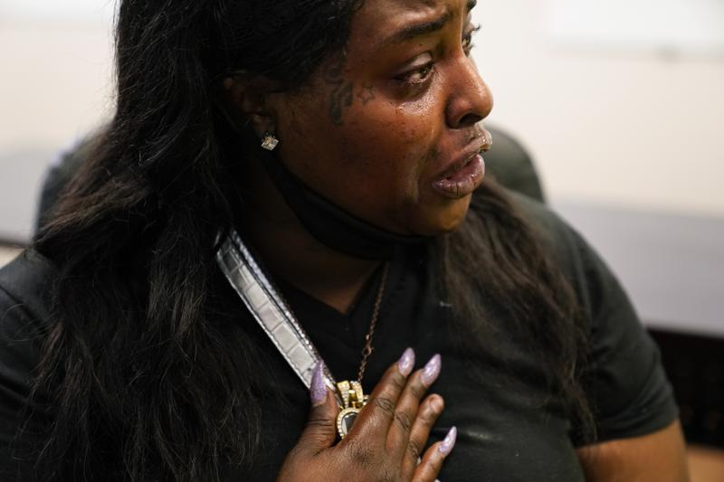
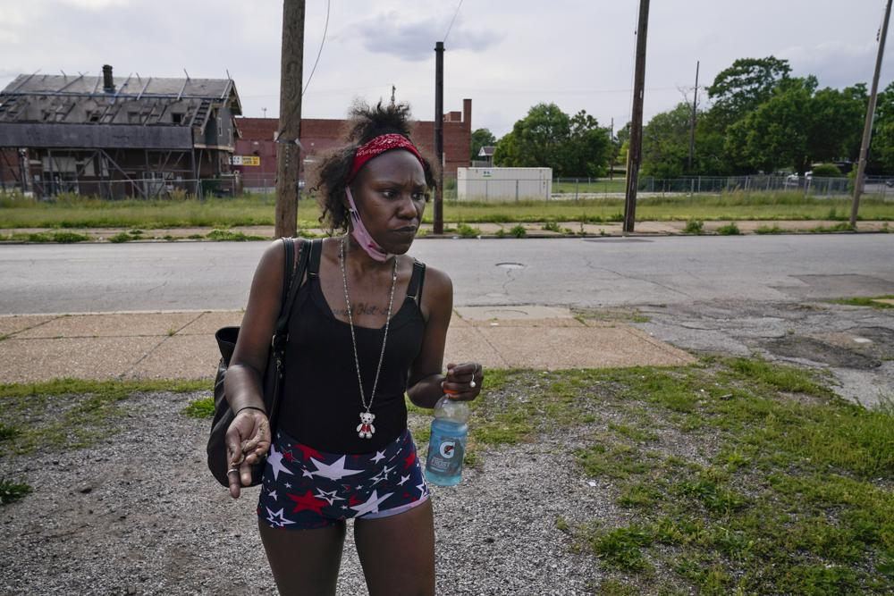

Spencer Platt | Getty Images
‘Historically tragic’: why are drug overdoses rising among Black and Indigenous Americans?
An ongoing opioid crisis, long considered a white, rural issue has shifted
As the drug overdose crisis in the United States exploded during the coronavirus pandemic – killing an unprecedented 100,000 people in 12 months – Black and Indigenous Americans were increasingly likely to become the victims.
Drug overdose rates in America surged by 31% in 2020, according to figures from the Centers for Disease Control and Prevention (CDC), as the pandemic left many facing lockdowns, and economic and emotional strain. But researchers at the University of California Los Angeles have found that the death rate surged most dramatically among Black and Indigenous Americans, who saw a staggering increase of 49% and 43% respectively in just one year.
While the data is not broken down by drug type, experts point toward one driving force: the explosion of synthetic opioids such as fentanyl, a highly potent drug that has flooded the US market and often ends up mixed into street drugs such as heroin, methamphetamines or cocaine.
Researchers say the numbers highlight the shifting dynamics of who is most at risk from the opioid crisis, which has in recent decades been viewed as an epidemic of rural, white America. Between 2019 and 2020, the overdose death rate for Black and Indigenous Americans surpassed that of white Americans, who were already dying in unprecedented numbers.
“We’re at a historically tragic moment,” said UCLA addiction researcher Joseph Friedman, who co-authored the study. “The increasing toxicity of the drug supply has disproportionately affected communities of color.”
- Ricky Bluthenthal
The tragedy has hit home for the Black community with several recent high-profile deaths, including the actor Michael K Williams and comedian Fuquan Johnson. Williams was found dead in his Brooklyn home in September from a mix of heroin, cocaine and fentanyl. Four men have since been charged in his death.
Johnson, 42, died at a Venice Beach house party after reportedly ingesting cocaine contaminated by fentanyl.
“He loved life and he was just starting to make his mark,” Pauline Johnson, Fuquan’s mother, told the Guardian, adding that her son would not have taken the drug if he knew it contained a dangerous synthetic.
Friedman and the study’s co-author Dr Helena Hansen, a UCLA psychiatrist and anthropologist, warn in their report that drug overdoses are “increasingly becoming a racial justice issue”, one that has been exacerbated by the Covid-19 pandemic but stems from historic inequities, including high rates of incarceration, economic disenfranchisement and loss of community cohesion.
Others point to a “perfect storm” created by a wave of super-potent synthetic drugs hitting the streets at a time users were feeling increased isolation and displacement because of the pandemic. These problems may have had bigger impacts in communities of color, which saw some of the worst health consequences from the coronavirus while shouldering some of the largest economic burdens.
Overall, however, there are still “a lot of unknowns” about what exactly has driven the sudden rise, or whether it will continue, says Ricky Bluthenthal, an addiction researcher at University of Southern California who was not involved in the study. Part of the problem is that the pandemic has limited hands-on research, says Bluthenthal, who usually collects information from drug users in Los Angeles and San Francisco, but was unable to get out into the field in 2020.
But Bluthenthal does point to the rise of fentanyl as a key element of the crisis. “What’s happening is fentanyl is replacing heroin in most of the nation’s largest drug markets,” said Bluthenthal. “As fentanyl has begun to replace heroin and become the only thing available, you have this increased mortality among African Americans.”
Changing the narrative
The UCLA study, which has not yet been published in a peer-reviewed journal, analysed the most recent data from CDC on overdose trends. While the number of overdose deaths rose for all racial groups nationally between 2019 and 2020, the rate increased fastest for African Americans, the study found, growing by 49% compared with a growth of 26% for white people. Overall death rates were highest for Indigenous Americans – who lost 41.4 people per 100,000 in the population in 2020, an increase of 43% over 2019.
The 2020 national numbers represent a huge shift from a decade earlier when white Americans were twice as likely to die of drug overdoses. It also complicates a narrative that has often painted the last two decades of opioid deaths as a crisis of white despair. In 2010, at a time when doctors were flooding lower-income, white communities with prescription opioid pills, white Americans were twice as likely to die of overdoses as Black Americans, according to the study’s authors. Then the US cracked down on opioid prescribing practices, forcing many who were dependent on opioids to turn to street drugs such as heroin.
This created larger markets around the country for illegal heroin, which was soon being adulterated and then replaced altogether by the cheaper-to-make and easier-to-transport synthetic drugs such as fentanyl, said Hansen.
“It began in the north-east, but it’s now spanned into the west,” she explained. “The overdose death rates for all racial groups rose dramatically, but in 2020 Indigenous American and Black death rates crossed over to exceed white death rates.”
- Dr. Helena Hansen
Hansen and other drug addiction researchers who spoke with the Guardian challenged the narrative that drug overdoses are a white crisis – saying the discussion has become overly focused on “deaths of despair”, a theory that blames the increase in drug overdose in the early 2000s on the growing job losses and disenfranchisement in predominantly white, more rural areas.
Hansen said this construct dismisses waves of overdoses in Black and brown communities that began decades earlier, when heroin was marketed toward economically disadvantaged communities starting in 1960s and continuing through the crack epidemic of the 1980s, which led to the “war on drugs” and mass incarceration.
“When Black people died it was normalized,” said Hansen, who is working on a book on this topic. She believes that people who are economically disenfranchised are those most vulnerable to drug overdoses, no matter their race. “However, when it comes to poor Black and brown neighborhoods, this happened decades earlier and we didn’t call that ‘deaths of despair’,” she said. “We called that ‘crime.’"
A sign painted on the side of a corner store reads, "Drugs... the new Slavery!" in St. Louis on Friday, May 21, 2021. As the COVID-19 pandemic intensified America’s opioid addiction crisis in nearly every corner of the country, many Black neighborhoods like this one suffered most acutely. (AP Photo | Brynn Anderson)
Symptoms of continuing legacy of oppression
The crisis facing Indigenous Americans has also been overlooked and misunderstood, said Melissa Walls, an indigenous addiction expert who is the director of the Great Lakes Hub for the Johns Hopkins Center for American Indian Health in Duluth Minnesota.
Pharmaceutical companies agreed to a $590m settlement with Indigenous American tribes this month, over claims that the companies’ targeted sales of opioid pills, such as Oxycontin, fueled waves of addiction and overdose deaths that have hit Indigenous communities particularly hard.
The data shows Indigenous Americans have had overdose death rates competing with those of whites since the rise of prescription opioids in the early 2000s – and have a 2020 rate well above those of other racial groups at 41 deaths per 100,000 people.
But Walls said the roots of the crisis among tribal groups goes back much further to first contacts with Europeans that began the displacement of Indigenous people from their tribal lands, and left many Indigenous Americans disenfranchised.
“This is just the teeny-tiny top of the iceberg of a lot of historical trauma and structural racism that goes back to how this country was founded and how Indigenous people have been treated since colonizers arrived,” Walls said. “These are just symptoms of a much bigger historical legacy of oppression that continues today.”
Yet she worries that focus on the addiction problems further pathologizes Indigenous communities, when instead the emphasis should be on supporting tribes to rebuild their cultures.
“These issues veil the reality of strength and brilliance in the indigenous communities,” said Walls, who has worked on creating programs to address addiction problems by using traditional Indigenous American healing methods.
Natisha Stansberry cries as she holds a locket of her child close to her chest in St. Louis on Monday, May 17, 2021. Stanberry was a victim of childhood sexual assault and her brother was murdered. She was told during a drug test that rat poison and fentanyl were found in her urine test when she went to Assisted Recovery Centers of America for help with her drug addiction. (AP Photo | Brynn Anderson)
“Every single native community I have worked with shares one common answer to these issues and that is reclaiming our culture. Returning to our cultural teachings is going to be the ticket out of this mess.”
Friedman said that recent incarceration is also a huge risk factor for overdoses – and one that disproportionately affects Black and Indigenous Americans “due to the over-policing and over-incarceration of Black and Indigenous communities”. Those who have just been released from jail are more prone to overdoses because their tolerance for drugs is low, while a lack of treatment services and social support increases the risk of relapsing.
The fact that rising overdoses come amid a pandemic that has already disproportionately affected communities of color makes the study even more troubling, said Dr Daniel Ciccarone, a professor specializing in addiction medicine at the University of California San Francisco.
“This is very unfortunate data,” said Ciccarone. “The historic magnitude of the drug crisis is tearing the fabric of our society,” he said. “It’s time for fundamental policy changes in how we treat and prevent drug use.”
Jamilia Allen, 31, talks about how she has been beaten down by the streets, raped and assaulted in her effort to make money for drugs, during a visit to a harm reduction mobile unit in St. Louis on Friday, May 21, 2021. “I’m not going to let this kill me, and if I can help anyone else,” she said, "then that’s one less person like me.” She was once an honor roll student and the captain of her high school cheerleading squad, and back then she judged people desperate for drugs. (AP Photo | Brynn Anderson)
The Statistics